Histoire & définition du TOG
Still → Littlejohn → Wernham
Le TOG est « une séquence coordonnée de techniques articulaires à longs leviers, permettant le diagnostic et le traitement des zones de restrictions rachidiennes et périphériques, par la mobilisation des articulations et la détente des tissus mous » (F. Hématy-Vasseur). Il fait partie de l'ostéopathie dite structurelle. Image : une danse avec sa propre chorégraphie (la routine) — « dans le TOG, ça bouge : les articulations, les tissus, le sujet et le thérapeute ».
Particularité diagnostic / traitement
Même geste
Le mouvement réalisé pour tester une structure est le même que pour la normaliser : les deux temps sont quasi similaires.
Cadre de travail
La routine pose un cadre dans lequel on peut intégrer des techniques plus spécifiques (énergie musculaire, thrust…).
Substrat
Les articulations et les tissus mous.
Trois ostéopathes, une filiation
| Ostéopathe | Contexte | Apport |
|---|---|---|
| A.T. Still (1828-1917) | Fonde l'ostéopathie en 1874 ; fonde l'American School of Osteopathy (ASO) en 1892. Souvent à tort vu comme un « thrusteur » : il utilisait surtout des manipulations articulaires, version primaire du TOG. | « La structure gouverne la fonction » — l'anatomie. |
| J.M. Littlejohn (1865-1947) | Écossais, arrive en Amérique en 1892, découvre l'ostéopathie par Still, s'inscrit à l'ASO (diplômé de médecine, enseigne la physiologie, doyen). Écarté de l'ASO en 1899 (vision « médicale » divergente) ; collège à Chicago puis fonde la British School of Osteopathy (BSO, Londres) en 1917. | « La fonction gouverne la structure » — la physiologie. |
| J. Wernham (1907-2007) | Anglais, voisin et élève de Littlejohn, diplômé à 40 ans la veille de la mort de ce dernier. Principal artisan de la codification du TOG. | Le trait d'union : la biomécanique — « la structure gouverne la fonction, et vice versa ». |
Source : « Le Traitement Ostéopathique Général (TOG) », Nicolas Acquié — 3e année, IEOQ 2026/2027.
La « biomécanique de Littlejohn »
Lignes droites, lignes courbes, vertèbres clés
La « biomécanique de Littlejohn » n'a de Littlejohn que le nom : c'est Wernham qui en fut l'ingénieur. Elle repose sur la mécanique du rachis de l'homme debout et justifie la chronologie des techniques à longs leviers. Elle n'a jamais été prouvée par les outils actuels de la science — à connaître pour comprendre la logique du TOG.
A) Les lignes droites
Lignes non parallèles (gravité)
Lignes de gravité antéro-postérieure et postéro-antérieure → points de passage vertébraux. Couple T11-T12 (ligne antéro-postérieure) : support antéro-supérieur du corps ; point de résistance de la torsion abdominale ; zone la plus forte du mécanisme vertébral ; point le plus faible du mécanisme costal (côtes flottantes) ; important pour la posture et la vascularisation abdominale.
Polygones de forces
Lignes de tension formant 2 pyramides triangulaires dont le sommet est centré sur T4 et la tête des 3es côtes ; elles tournent autour de la ligne de gravité à ce niveau. Toute torsion entre elles, ou toute circulation anormale dans les deux cavités, retentit sur les têtes des 3es côtes.
Pyramide supérieure
Base fragile (tissus mous du foramen magnum, coussin du crâne). La tête est en équilibre sur le couple T4 / têtes des 3es côtes ; T4 = point terminal de la pression descendante et des torsions de la tête → coordination de la circulation sanguine et de la respiration.
Pyramide inférieure
Base forte (fémoro-iliaque, osseuse) : fondation solide de l'abdomen et du maintien de sa pression. Les deux pyramides garantissent une bonne pression corporelle et soutiennent organes et rachis.
Lignes parallèles — LCG
Ligne centrale de gravité verticale : odontoïde, L3, entre les coxo-fémorales, genoux, talo-naviculaires. Résultante des lignes antéro-postérieure et postéro-antérieure. L3 = vertèbre clé et centre de gravité du corps ; tout déplacement de la LCG en avant/arrière de L3 modifie les tensions.
Types morphologiques
Selon la position de la LCG : type normal, antérieur, postérieur.
B) Les lignes courbes
Courbures primaires
Convexité postérieure (cyphose dorsale, sacrée) ; position originelle du fœtus.
Courbures secondaires
Convexité antérieure (cervicale, lombaire) ; apparaissent avec l'évolution (redressement de la tête, bipédie). Adaptatives aux primaires, plus souples, plus sujettes aux douleurs et hernies discales → approche surtout par tissus mous.
Arcs vertébraux
Supérieur : C1-C4 · Moyen : C6-T8 · Inférieur : T10-L4.
Vertèbres « clés » & points forts/faibles
| Catégorie | Niveaux | Rôle |
|---|---|---|
| Pivots de mobilité | C5, T9, L5 | Entre deux arcs contigus → bonne mobilité entre eux |
| Pivots de gravité | C2, T4, L3 | Clés de voûte des arcs ; bon fonctionnement des systèmes associés (circulatoire, digestif…) |
| Points forts | T5 à L2 | — |
| Points faibles | C7, T4, T9, L3 | — |
Source : « Le Traitement Ostéopathique Général (TOG) », Nicolas Acquié — 3e année, IEOQ 2026/2027.
Les principes fondateurs du TOG
3 R, attention/intention, positionnement, durée
Les 3 R de Wernham : Routine, Rythme, Rotation (parallèle avec « Reading, ’Riting and ’Rithmetic » : rotation ↔ reading, routine ↔ riting, rythme ↔ rithmetic).
Les 3 R
1) Routine
« Tous les arts se fondent sur la routine » (Wernham). Comme le musicien qui apprend ses gammes : la routine étalonne la main. Quand la séquence est familière, l'attention se porte sur la texture et le mouvement sous la main, pas sur la manœuvre suivante. Elle installe un cadre où intégrer des techniques segmentaires (énergie musculaire, thrust…) comme des variations sur une partition.
2) Rythme
Élément basal de la physiologie (rythme cardiaque, respiratoire, MRP…). Chaque personne a son rythme propre. Les mouvements rythmés « mobilisent l'élément liquide du corps et atteignent les tissus dans leurs activités intrinsèques, de la manière la moins traumatique possible ».
3) Rotation
Base de l'utilisation des longs leviers : « tous les mouvements du corps sont des cercles ou des modifications de cercles ». L'association flexion/extension, abduction/adduction, inclinaison donne une rotation → permet de tester et traiter amplitudes articulaires et textures tissulaires.
Deux autres triades de Wernham
Mobilité, motilité, intégrité articulaire
—
Coordination, corrélation, stabilisation
But ultime de l'ostéopathe selon Wernham (le plus ardu à toucher du doigt). Coordination : intégration harmonieuse de la correction au corps · Corrélation : bonne relation entre les éléments (chacun influence l'autre) · Stabilisation : juste régulation de l'équilibre général.
B) Autres consignes
Attention & intention
L'attention (qualité tissulaire, amplitude) fait naître l'intention thérapeutique. Maîtriser vite la séquence pour que la routine laisse place à l'attention → TOG unique à chaque patient, pas une chorégraphie sans efficacité.
Confort du sujet
Priorité avant le positionnement : sujet confortable = relâché = diagnostic et traitement plus fiables.
Décubitus
Coussin sous la tête si lordose cervicale accentuée.
Procubitus
Pieds hors de la table (évite la rotation des hanches) ; tête tournée vers le thérapeute (observer ses réactions, détendre le côté travaillé — triangle haut du polygone de tension) ; coussin sous le ventre si le TOG risque de durer (réduit la lordose lombaire).
Décubitus latéral
Privilégier le coussin pour aligner le rachis cervical avec le reste du rachis, plutôt que les membres supérieurs repliés sous la tête.
Côté de départ
On commence par le côté de l'iliaque antérieur ; puis l'autre côté. Un test articulaire n'est utile que fait des deux côtés.
Durée
Dictée par la qualité tissulaire : gains progressifs d'amplitude, amélioration tissulaire. En situation aiguë : ne pas sur-stimuler le sympathique (ni par la rapidité, ni par la durée).
Source : « Le Traitement Ostéopathique Général (TOG) », Nicolas Acquié — 3e année, IEOQ 2026/2027.
Indications & contre-indications
Douleur chronique, système neuro-végétatif
A) Contre-indications
Absolues / majeures
Crises aiguës, urgences médicales (fractures, chirurgies fraîches…).
La contre-indication majeure
« Un thérapeute non concentré, peu à l'écoute des informations que lui fournissent les tissus, mettant en œuvre cette technique de manière routinière et non exploratrice. »
B) Indications — « technique tout public »
Sur-mesure
Grâce au principe de rythme, chaque TOG est adapté au sujet : enfant en croissance, personne âgée sédentaire, sportif (préparation/récupération), personne invalide alitée en convalescence.
Restrictions
Restrictions articulaires et tissulaires.
Douleurs chroniques
Plasticité du SNC : la zone nerveuse en lien avec la région douloureuse est mal représentée dans l'homonculus → « floutage cortical ». La mobilité est un élément clé contre la douleur ; la mobilité passive articulaire du TOG (« rotation ») a un rôle à jouer.
Système neuro-végétatif
Voir ci-dessous.
Action sur le système neuro-végétatif
Pour Littlejohn, un traitement ostéopathique doit avant tout être inhibiteur (viser le parasympathique). Nos modes de vie (alimentation industrielle, stress, covid…) stimulent l'orthosympathique → intérêt de l'accent parasympathique.
Classiquement, le TOG a une influence plutôt orthosympathique : il mobilise les ganglions de la chaîne sympathique le long du rachis ; les ganglions parasympathiques étant cranio-sacrés, l'action du TOG y est moindre. En ralentissant le rythme, on obtient une action calmante, parasympathique.
| Orthosympathique | Parasympathique | |
|---|---|---|
| Objectif | Soutenir l'action, brûler les stocks, fuir | Maintenir/reconstituer les réserves d'énergie (alimentation, respiration, digestion) |
| Origine | Fibres de T1 à T12 (± L1-L2) | Crânien : III, VII, IX, X · Pelvien : S2, S3, S4 |
| Ganglions | Para- et prévertébraux | Directement sur l'organe |
| Organisation | Très divergent : 1 neurone préganglionnaire → jusqu'à 20 postganglionnaires | Précis : 1 neurone préganglionnaire → son organe |
Ganglions orthosympathiques (rappel)
| Ganglion | Niveau | Territoire |
|---|---|---|
| Paravertébraux — cervical sup. | C1 | — |
| cervical moyen | C4-C5 | — |
| stellaire | C7-T1 | — |
| Cœliaque (prévertébral) | T12-L1 | Estomac, foie, vésicule biliaire, rate, portion droite du pancréas et du duodénum |
| Mésentérique supérieur | L1-L2 | Portion gauche pancréas/duodénum, jéjunum, iléon, côlon ascendant, 2/3 droits du côlon transverse |
| Mésentérique inférieur | L3 | 1/3 gauche du côlon transverse, côlon descendant, sigmoïde, rectum |
| Plexus hypogastrique sup. / inf. | L3-L4 / L5-S1 | — |
Ganglions paravertébraux : 3 cervicaux, 11 thoraciques, 4 lombaires, 3-4 sacrés au moins.
Source : « Le Traitement Ostéopathique Général (TOG) », Nicolas Acquié — 3e année, IEOQ 2026/2027.
Routine globale — sujet debout
Évaluation de l'iliaque antérieur
Chronologie du TOG : sujet debout → décubitus → procubitus → décubitus latéral. Cette partie présente la version originelle de Wernham (test et traitement « généraux », mobilité articulaire et tissulaire).
Quel iliaque est antérieur ? (point de départ du TOG)
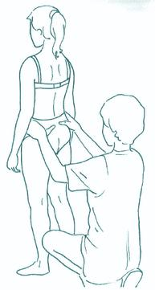
Position du sujet
Debout, pieds écartés de la largeur des hanches.
Position du thérapeute
Derrière le sujet, regard à hauteur du bassin ; mains sur le bord supérieur des crêtes iliaques, pouces sous les EIPS.
But
Visualiser quel os iliaque est vers l'avant : l'iliaque le plus haut = iliaque antérieur → côté où débute le TOG.
⚠️ À ne pas confondre avec le TFD (test de flexion debout), dynamique, qui cherche une dysfonction ilio-sacrée.
Confirmation possible en décubitus : comparer les « longueurs de jambes » aux malléoles internes — la jambe « longue » est du côté de l'iliaque antérieur. Au besoin, test de mobilité iliaque ensuite.
Source : « Le Traitement Ostéopathique Général (TOG) », Nicolas Acquié — 3e année, IEOQ 2026/2027.
Routine globale — sujet en décubitus
Oscillations, membre inférieur, membre supérieur, cervicales
Sens du TOG : on débute du côté de l'iliaque antérieur. Iliaque → région lombaire → membre supérieur homolatéral, puis iliaque opposé → lombaires → membre supérieur controlatéral, et pour finir les cervicales.
Chronologie de la routine en décubitus
1) Évaluation globale (« oscillations »)
- « Rocking » de la tête
- Oscillations bilatérales aux deux pieds
- Oscillations unilatérales (en diagonale)
2) TOG du membre inférieur
- Tissus mous + rotations int./ext. du membre inférieur
- Rotations int./ext. de la coxo-fémorale
- Mobilisations hanche et genou
- Iliaque antérieur et sacro-iliaque
- Région lombaire
3) TOG du membre supérieur
- Épaule, clavicule, sternum, côtes hautes/moyennes
- Côtes basses et pompage du foie
- Circumductions de l'épaule
4) TOG du rachis cervical
- Translations cervicales
- Extension / traction céphalique (à partir de T4)
1) Évaluation globale
« Rocking » de la tête
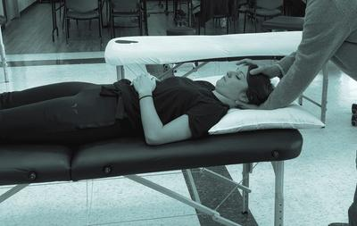
Position du thérapeute
À la tête du sujet, en fente. Une main en berceau sous l'occiput ; l'autre sur le haut du crâne (environ en regard de la suture coronale).
Réalisation
Légère traction de la main sous l'occiput vers soi + légère poussée rythmique sur le haut du crâne → rotation antérieure de la tête et surtout une onde vers les pieds.
Interprétation : on évalue la progression de l'onde et l'endroit où elle semble s'arrêter = région en dysfonction / manque de mobilité (se concentrer sur le mouvement des pieds). Première indication de zone à traiter.
Oscillations bilatérales aux deux pieds
Position du thérapeute
Aux pieds du patient, ceux-ci reposant sur le bassin/ventre de l'ostéopathe ; les deux mains soutiennent les pieds.
Réalisation
Légère poussée sur les pieds → onde rythmique vers la tête. La poussée teste aussi la tension du triceps sural (flexion dorsale de cheville).
Interprétation : où l'onde s'arrête (se concentrer sur ce qui parvient jusqu'à la tête) = région en manque de mobilité. Autre indication de zone à traiter.
Oscillations unilatérales (diagonale)
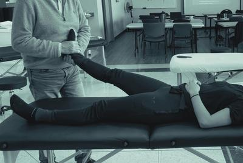
Position du thérapeute
Au pied du patient, posé sur le ventre de l'ostéopathe ; main interne sur le cou-de-pied (talus), main externe sous le calcanéus.
Réalisation
Légère poussée → onde rythmique de un pied vers l'épaule opposée (schéma croisé). Évaluation visuelle et palpatoire du niveau qui fait obstacle à l'onde.
2) TOG du membre inférieur
Tissus mous et rotations int./ext. du membre inférieur
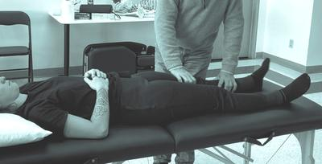
Position du thérapeute
Du côté homolatéral. Main caudale sur la face antérieure du tibia (sinon face antérieure de l'extrémité distale de la cuisse). Main crâniale alterne sur la cuisse (antérieure, latérale, médiale…).
Réalisation
Mouvement alterné de rotation interne/externe par la main caudale : teste la qualité de rotation de la coxo-fémorale et crée un mouvement continu permettant à la main crâniale d'évaluer les tissus de hanche et cuisse.
La position de la main crâniale et l'intention du praticien comptent : selon où il place son esprit, il teste les muscles, les fascias de la cuisse ou la qualité articulaire de la hanche.
Rotations int./ext. de la coxo-fémorale
Position du thérapeute
Du côté homolatéral ; saisit le membre inférieur pour l'amener en double flexion (hanche + genou).
Réalisation
Évalue les rotations interne et externe de hanche en amenant le pied vers l'intérieur puis l'extérieur.
Mobilisation de la hanche et du genou
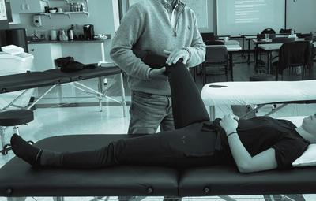
Position du thérapeute
Du côté homolatéral. Main caudale en pont sous le mollet (de l'intérieur vers l'extérieur) ; attention à ne pas comprimer le creux poplité. Main crâniale sur la face antérieure du genou, englobant l'articulation.
Réalisation
Circumductions de la coxo-fémorale, tantôt en rotation externe, tantôt interne. La main crâniale (et l'attention) teste/traite aussi le genou.
Iliaque antérieur et articulation sacro-iliaque
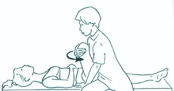
Position du thérapeute
Main crâniale sur l'aile iliaque, doigts en regard de l'EIPS. Main et bras caudaux amènent la cuisse à 90° de flexion (pas plus, pour rester dans la sacro-iliaque).
Réalisation
Côté de l'iliaque antérieur : rotations externes (RE) de hanche → conversion postérieure de l'iliaque. Tester le pôle supérieur puis le pôle inférieur de la sacro-iliaque ; en cas de restriction, le traitement se fait dans le même temps que le test (insister sur le paramètre non satisfaisant).
Rappel : rotation interne = antériorise l'iliaque · rotation externe = postériorise l'iliaque.
Mobilisation de la région lombaire
Position du thérapeute
Bras caudal soutient la jambe à 90° de flexion de hanche ; main crâniale au niveau de L5 (point de départ).
Réalisation
Le bras caudal amène la hanche en rotation → inclinaison homolatérale / rotation lombaire. La main crâniale évalue mobilité et qualité tissulaire. Ici le sens de rotation de hanche n'importe pas (on mobilise les lombaires, on ne cherche pas à antérioriser/postérioriser l'iliaque). Reproduit niveau par niveau jusqu'à T9.
3) TOG du membre supérieur
Épaule, clavicule, sternum, côtes hautes/moyennes
Position du thérapeute
Le thérapeute se déplace vers la tête du patient, du côté homolatéral, face au sujet. Main crâniale saisit le membre supérieur du sujet et le colle contre son tronc avec l'avant-bras (saisie légère, main non tétanisée). Main caudale se déplace sur les régions à tester.
Réalisation
En alternant le poids du corps sur le pied crânial et caudal : mouvement global de va-et-vient vers les pieds du sujet + légère rotation de tout le corps (axe vertical). La main caudale se déplace sur épaule, clavicule, sternum, côtes (homo- et controlatérales) ; plus la zone est éloignée du point d'entrée, plus le mouvement est ample (ex. côtes basses controlatérales).
Questions à se poser : la zone bouge-t-elle de façon fluide ? Est-il facile de la mettre en mouvement ? Une amplitude fait-elle naître une restriction ? Quelle qualité tissulaire ? Résistance musculaire ? articulaire ?
Côtes basses et pompage du foie
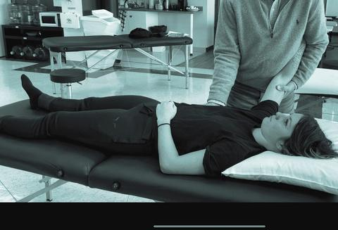
Position du thérapeute
Même position ; le thérapeute fait un quart de tour vers les pieds du sujet. Main crâniale soutient toujours le bras (bloqué entre son bras et son tronc) ; main caudale se déplace sur le thorax.
Réalisation
Va-et-vient avec un temps d'aller (traction) vers la tête du sujet et un retour au neutre. Évalue les côtes basses homo- et controlatérales. Sur la zone du foie, main caudale globale : lors de l'aller, elle exerce une pression = pompage hépatique.
Circumductions de l'épaule
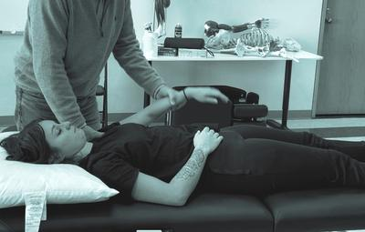
Position du thérapeute
Main crâniale sur l'épaule, doigts largement disposés en postérieur (omoplate, gléno-humérale, muscles périscapulaires), pouce sur la clavicule. Main caudale saisit le bras.
Réalisation
Main caudale, même rythme : circumductions de l'épaule ; la main crâniale ressent (et corrige si besoin) la qualité tissulaire/articulaire.
4) TOG du rachis cervical
On passe aux cervicales après avoir testé/corrigé membre inférieur puis supérieur des DEUX côtés.
Translations cervicales
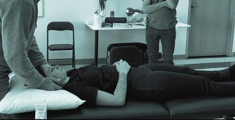
Position du thérapeute
À la tête du sujet ; deux mains de part et d'autre de la colonne cervicale, au niveau des processus articulaires postérieurs.
Réalisation
Translations vertébrales alternées pour évaluer qualité articulaire et tissulaire, étage par étage.
Extension / traction céphalique (à partir de T4)
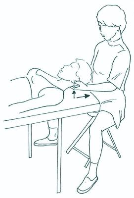
Position du thérapeute
Toujours à la tête. Index et majeurs des deux mains sur les transverses de T4. Tête du sujet sur les avant-bras du thérapeute (posés sur la table) si possible.
Réalisation
Avec le corps, « en rentrant les coudes dans la table », pousser les transverses/PAP vers le plafond, puis tracter T4 céphaliquement dans l'axe du rachis : mouvement circulaire « en vague » dans le plan sagittal. Vertèbre par vertèbre jusqu'à l'occiput, fin par une légère traction de l'occiput.
Attention particulière aux mobilités de T4, T1, C1 et de l'occiput pendant la remontée.
Source : « Le Traitement Ostéopathique Général (TOG) », Nicolas Acquié — 3e année, IEOQ 2026/2027.
Routine globale — sujet en procubitus
Iliaque, oscillations, épaule
Sujet en décubitus ventral, pieds hors de la table, tête tournée vers le thérapeute (observer les réactions du visage).
Iliaque et sacro-iliaque
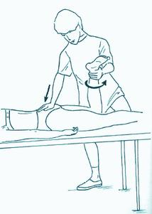
Position du thérapeute
Debout, au niveau du genou homolatéral à l'iliaque à traiter. Coude en extension, talon de la main crâniale sur la face postérieure du sacrum (le stabiliser pour ne pas le mobiliser avec l'iliaque). Main caudale saisit la cheville ; genou du sujet à 90°.
Réalisation
Rotations de hanche par la main caudale en maintenant l'appui sacré.
Rappel : RI de hanche antériorise l'iliaque · RE le postériorise.
Oscillations vertébrales et costales
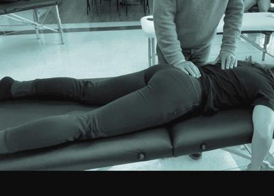
Position du thérapeute
À hauteur de la région lombaire du sujet. Main caudale sur le bassin (sacrum, sacro-iliaque) ; main crâniale se déplace le long du rachis, des paravertébraux et du thorax.
Réalisation
Oscillations créées au bassin par la main caudale ; la main crâniale évalue la mobilité des vertèbres (lombaires et thoraciques jusqu'à T9) et les tissus mous du rachis et du thorax (homo- et controlatéraux).
Mobilisations vertébrales / costales unilatérales
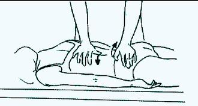
Position du thérapeute
Main caudale (motrice) saisit le bassin controlatéral. Main crâniale tantôt sur la face latérale des processus épineux lombaires (colonne du pouce parallèle au rachis), tantôt sur la face postérieure des côtes homolatérales à l'iliaque.
Réalisation
Alternance de transfert du poids du corps d'un pied à l'autre → oscillation latérale du bassin → onde le long du rachis. Restriction vertébrale : le pouce se place sur la vertèbre sus-jacente pour mobiliser la sous-jacente. Restriction costale : accentuer la rotation en mobilisant le niveau costal (légère pression supplémentaire). Remonter jusqu'à T9.
Membre supérieur : épaule, colonne thoracique, côtes
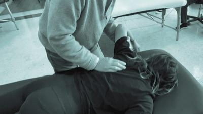
Position du thérapeute
De côté, en fente avant ouverte vers la tête (pied externe devant). Main crâniale passe sous le bras du sujet (qui pend hors table) pour englober l'épaule. Main caudale se déplace sur la colonne, l'angle postérieur des côtes et les tissus mous postérieurs du thorax.
Réalisation
Rotation (rétropulsion) de l'épaule : la lever, l'amener vers soi, laisser revenir, en transférant le poids du corps d'un pied à l'autre. Évaluation articulaire et tissulaire homo- et controlatérale.
Source : « Le Traitement Ostéopathique Général (TOG) », Nicolas Acquié — 3e année, IEOQ 2026/2027.
Routine globale — sujet en décubitus latéral
Sacro-iliaques, lombaires, oscillations
Sacro-iliaques, région lombaire et thoracique basse
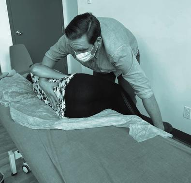
Position du thérapeute
Main caudale saisit les jambes du sujet (en triple flexion) au niveau des chevilles. Main crâniale se déplace sur les sacro-iliaques, la région lombaire et thoracique basse.
Réalisation
Mouvements d'abaissement et d'élévation des chevilles (vers le plafond / vers le sol) → inclinaisons du bassin et du rachis lombaire. La main crâniale évalue (et traite) sacro-iliaques, lombaires et thoracique basse.
Oscillations vertébrales
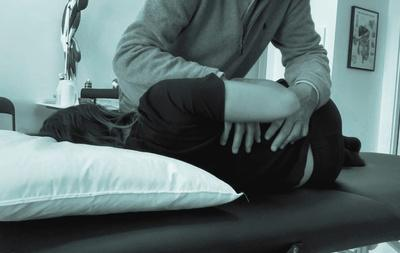
Position du thérapeute
Avant-bras caudal sur la face latérale de l'os iliaque (côté plafond), sans « poncer » le grand trochanter. Avant-bras crânial sur la face latérale du thorax (côté plafond), en utilisant la partie charnue de l'avant-bras, pas le bord postéro-médial de l'ulna.
Réalisation
Avec le corps du thérapeute : mouvement d'oscillation en sens opposé bassin/thorax (tantôt bassin vers soi et thorax en sens opposé, tantôt bassin vers l'arrière et thorax vers soi). Les mains se déplacent le long du rachis pour évaluer mobilité articulaire et réponse tissulaire.
Fin de la routine du TOG « global ».
Source : « Le Traitement Ostéopathique Général (TOG) », Nicolas Acquié — 3e année, IEOQ 2026/2027.
Le TOG — techniques spécifiques
À venir
🚧 La partie VI — « Le TOG, des techniques spécifiques » (debout, décubitus, procubitus, décubitus latéral) est annoncée au sommaire mais n'est pas incluse dans ce premier chapitre. Elle sera ajoutée avec le prochain support de cours.
Source : « Le Traitement Ostéopathique Général (TOG) », Nicolas Acquié — 3e année, IEOQ 2026/2027.